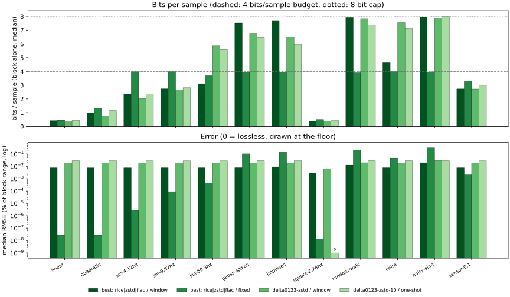

← codec comparison (index.html)
Window = one block group: a minute of 60 blocks, 5 consecutive seconds of each of the 12 signal kinds, every block
rescaled to [0, 1], standing in for one sensor passing through different regimes. 5 groups
(one per report seed); bits/sample are whole block groups, every byte counted. Errors are absolute, which equals % of each
block's full scale; they are per block, summarized over all blocks (or a kind's blocks).
Regenerate: cd experimental && uv run python make_rate_report.py.
best: … stores a coder id per block, then each coder's block group of the blocks it won.delta0123-rice — FLAC-style partitioned Rice (2p partitions, own k each; order/p/k chosen by exact cost);
delta0123-zstd (level 9) / delta0123-deflate — zigzag residuals, narrowest byte width, byte-stream-split, then compress;
flac — real libFLAC level 8 (LPC up to order 12) on the same integers, frame bytes only;
best: … — per block, keep the coder whose standalone encoding is smallest (+1 byte coder id);
0-order entropy — zero-order entropy of the best residual + headers. A reference, not a codec and not a
true floor: partitioned Rice, LPC and LZ matching adapt within a block and can beat it.delta12-zstd-8 only considers orders 1 and 2 (performance option).| coder | rate control | avg bits/sample | overall RMSE | median block RMSE | worst block RMSE | worst max |err| | capped blocks | encode µs/block |
|---|---|---|---|---|---|---|---|---|
delta0123-rice | window | 4.000 | 0.0584% | 0.0570% | 0.214% | 0.367% | 1 | 70807 |
delta0123-rice | fixed | 3.706 | 0.2493% | 0.0633% | 3.554% | 6.246% | — | 32257 |
delta0123-zstd | window | 3.996 | 0.0238% | 0.0185% | 0.236% | 0.403% | 38 | 11956 |
delta0123-zstd | fixed | 3.035 | 0.2426% | 0.0402% | 2.703% | 4.818% | — | 3728 |
delta0123-deflate | window | 3.999 | 0.0255% | 0.0214% | 0.230% | 0.399% | 30 | 20469 |
delta0123-deflate | fixed | 2.972 | 0.2850% | 0.0422% | 3.335% | 5.729% | — | 5934 |
flac | window | 3.942 | 0.0422% | 0.0396% | 0.208% | 0.356% | 1 | 2247 |
flac | fixed | 3.484 | 0.2654% | 0.0187% | 3.857% | 6.790% | — | 1238 |
best: rice|zstd | window | 3.999 | 0.0206% | 0.0166% | 0.217% | 0.373% | 29 | 121099 |
best: rice|zstd | fixed | 2.976 | 0.2059% | 0.0274% | 2.703% | 4.818% | — | 37372 |
best: rice|zstd|flac | window | 3.990 | 0.0153% | 0.0078% | 0.205% | 0.359% | 74 | 167430 |
best: rice|zstd|flac | fixed | 3.102 | 0.1994% | 0.0012% | 2.703% | 4.818% | — | 39961 |
0-order entropy | window | 4.000 | 0.0172% | 0.0162% | 0.103% | 0.183% | 2 | 6181 |
0-order entropy | fixed | 3.007 | 0.1720% | 0.0144% | 1.987% | 3.406% | — | 2475 |
delta0123-zstd-8 | one-shot | 2.826 | 0.1086% | 0.1128% | 0.226% | 0.393% | 1 | 6 |
delta0123-zstd-10 | one-shot | 3.844 | 0.0313% | 0.0282% | 0.226% | 0.393% | 36 | 6 |
delta0123-zstd-12 | one-shot | 4.413 | 0.0224% | 0.0071% | 0.226% | 0.393% | 124 | 7 |
delta12-zstd-8 | one-shot | 2.927 | 0.1086% | 0.1128% | 0.226% | 0.393% | 1 | 6 |
quant8-delta1-deflate (earlier codec) | none | 3.079 | 0.1080% | 0.1127% | 0.120% | 0.196% | — | — |
One-shot rows include each block's min and max, stored in the block group. Encode time is the full rate-control search for window/fixed rows (Python, single thread), per block; one-shot is a single pass. Every block spans [0, 1], so one-shot's per-block step and the shared window step mean the same thing.

Median over the kind's 25 blocks; bits/sample is the block coded on its own (inside the block group it only has a share of the total).
| signal | order (most blocks) | step | bits/sample | RMSE | mean err | max err | min err | max |err| |
|---|---|---|---|---|---|---|---|---|
| linear | B=10 order 1 | 0.000978 | 0.43 | 0.0282% | -0.0000% | +0.0000% | +0.0000% | 0.0487% |
| quadratic | B=10 order 1 | 0.000978 | 1.14 | 0.0289% | -0.0009% | +0.0000% | +0.0000% | 0.0489% |
| sin-4.12hz | B=10 order 2 | 0.000978 | 2.34 | 0.0281% | +0.0001% | +0.0000% | +0.0000% | 0.0488% |
| sin-9.87hz | B=10 order 3 | 0.000978 | 2.82 | 0.0280% | +0.0004% | +0.0000% | +0.0000% | 0.0488% |
| sin-50.3hz | B=10 order 3 | 0.000978 | 5.58 | 0.0281% | +0.0006% | +0.0000% | +0.0000% | 0.0489% |
| gauss-spikes | B=10 order 2 | 0.000978 | 6.47 | 0.0282% | -0.0002% | +0.0000% | +0.0000% | 0.0488% |
| impulses | B=10 order 0 | 0.000978 | 5.98 | 0.0289% | -0.0007% | +0.0000% | +0.0000% | 0.0489% |
| square-2.24hz | B=9 order 1 | 0.00196 | 0.45 | 0.0000% | +0.0000% | +0.0000% | +0.0000% | 0.0000% |
| random-walk | B=10 order 1 | 0.000978 | 7.38 | 0.0282% | +0.0000% | +0.0000% | +0.0000% | 0.0488% |
| chirp | B=10 order 3 | 0.000978 | 7.12 | 0.0280% | +0.0001% | +0.0000% | +0.0000% | 0.0488% |
| noisy-sine | B=10 order 1 | 0.000978 | 8.02 | 0.0282% | -0.0000% | +0.0000% | +0.0000% | 0.0488% |
| sensor-0.1 | B=10 order 1 | 0.000978 | 2.98 | 0.0283% | +0.0002% | +0.0000% | +0.0000% | 0.0489% |
Block group Δ = 0.000679, 0.000635, 0.00063, 0.00063, 0.000655
Median over the kind's 25 blocks; bits/sample is the block coded on its own (inside the block group it only has a share of the total).
| signal | order (most blocks) | step | bits/sample | RMSE | mean err | max err | min err | max |err| |
|---|---|---|---|---|---|---|---|---|
| linear | order 1 | 0.000635 | 0.33 | 0.0183% | -0.0001% | +0.0090% | +0.0000% | 0.0317% |
| quadratic | order 1 | 0.000635 | 0.77 | 0.0184% | +0.0001% | +0.0090% | +0.0000% | 0.0317% |
| sin-4.12hz | order 2 | 0.000635 | 2.02 | 0.0183% | +0.0001% | +0.0090% | +0.0000% | 0.0317% |
| sin-9.87hz | order 3 | 0.000635 | 2.67 | 0.0183% | +0.0001% | +0.0090% | +0.0000% | 0.0317% |
| sin-50.3hz | order 3 | 0.000635 | 5.86 | 0.0184% | +0.0000% | +0.0090% | +0.0000% | 0.0317% |
| gauss-spikes | order 2 | 0.000635 | 6.78 | 0.0185% | -0.0003% | +0.0090% | +0.0000% | 0.0317% |
| impulses | order 0 | 0.000635 | 6.53 | 0.0185% | +0.0001% | +0.0090% | +0.0000% | 0.0317% |
| square-2.24hz | order 0 | 0.000635 | 0.37 | 0.0063% | +0.0044% | +0.0090% | +0.0000% | 0.0090% |
| random-walk | order 1 | 0.000679 | 7.83 | 0.0197% | +0.0000% | +0.0052% | +0.0000% | 0.0339% |
| chirp | order 3 | 0.000635 | 7.55 | 0.0185% | +0.0003% | +0.0090% | +0.0000% | 0.0317% |
| noisy-sine | order 1 | 0.00105 | 7.89 | 0.0294% | +0.0003% | -0.0076% | +0.0000% | 0.0523% |
| sensor-0.1 | order 1 | 0.000635 | 2.72 | 0.0185% | -0.0002% | +0.0090% | +0.0000% | 0.0316% |
Block group Δ = 0.000278, 0.000275, 0.000266, 0.000261, 0.000245
Median over the kind's 25 blocks; bits/sample is the block coded on its own (inside the block group it only has a share of the total).
| signal | order (most blocks) | step | bits/sample | RMSE | mean err | max err | min err | max |err| |
|---|---|---|---|---|---|---|---|---|
| linear | delta0123-zstd order 1 | 0.000266 | 0.42 | 0.0077% | -0.0000% | -0.0009% | +0.0000% | 0.0133% |
| quadratic | delta0123-zstd order 1 | 0.000266 | 0.99 | 0.0076% | +0.0001% | -0.0009% | +0.0000% | 0.0133% |
| sin-4.12hz | delta0123-zstd order 2 | 0.000266 | 2.34 | 0.0076% | +0.0000% | -0.0009% | +0.0000% | 0.0133% |
| sin-9.87hz | delta0123-rice order 3 | 0.000266 | 2.74 | 0.0077% | -0.0001% | -0.0009% | +0.0000% | 0.0133% |
| sin-50.3hz | flac LPC | 0.000266 | 3.10 | 0.0077% | +0.0001% | -0.0009% | +0.0000% | 0.0133% |
| gauss-spikes | flac LPC | 0.000266 | 7.53 | 0.0078% | -0.0000% | -0.0009% | +0.0000% | 0.0133% |
| impulses | delta0123-zstd order 0 | 0.000316 | 7.70 | 0.0091% | -0.0000% | -0.0018% | +0.0000% | 0.0158% |
| square-2.24hz | delta0123-zstd order 0 | 0.000266 | 0.38 | 0.0028% | -0.0004% | -0.0009% | +0.0000% | 0.0040% |
| random-walk | delta0123-rice order 1 | 0.00044 | 7.94 | 0.0126% | -0.0000% | +0.0049% | +0.0000% | 0.0220% |
| chirp | flac LPC | 0.000266 | 4.63 | 0.0077% | +0.0001% | -0.0009% | +0.0000% | 0.0133% |
| noisy-sine | delta0123-rice order 1 | 0.00069 | 7.96 | 0.0196% | -0.0000% | -0.0036% | +0.0000% | 0.0345% |
| sensor-0.1 | delta0123-zstd order 1 | 0.000266 | 2.73 | 0.0077% | -0.0003% | -0.0009% | +0.0000% | 0.0131% |
Block group Δ = 9.31e-10, 9.31e-10, 9.31e-10, 9.31e-10, 9.31e-10
Median over the kind's 25 blocks; bits/sample is the block coded on its own (inside the block group it only has a share of the total).
| signal | order (most blocks) | step | bits/sample | RMSE | mean err | max err | min err | max |err| |
|---|---|---|---|---|---|---|---|---|
| linear | delta0123-zstd order 1 | 9.31e-10 | 0.44 | 0.0000% | -0.0000% | -0.0000% | +0.0000% | 0.0000% |
| quadratic | delta0123-zstd order 2 | 9.31e-10 | 1.32 | 0.0000% | -0.0000% | -0.0000% | +0.0000% | 0.0000% |
| sin-4.12hz | flac LPC | 1e-07 | 3.98 | 0.0000% | +0.0000% | -0.0000% | +0.0000% | 0.0000% |
| sin-9.87hz | flac LPC | 3.21e-06 | 3.98 | 0.0001% | -0.0000% | +0.0002% | +0.0000% | 0.0002% |
| sin-50.3hz | flac LPC | 1.66e-05 | 3.69 | 0.0005% | +0.0000% | +0.0001% | +0.0000% | 0.0008% |
| gauss-spikes | delta0123-rice order 1 | 0.00358 | 3.94 | 0.1029% | -0.0026% | +0.0027% | +0.0000% | 0.1786% |
| impulses | delta0123-zstd order 0 | 0.00465 | 3.96 | 0.1378% | -0.0055% | -0.1252% | +0.0000% | 0.2322% |
| square-2.24hz | delta0123-zstd order 0 | 9.31e-10 | 0.50 | 0.0000% | -0.0000% | -0.0000% | +0.0000% | 0.0000% |
| random-walk | delta0123-rice order 1 | 0.00716 | 3.90 | 0.2051% | -0.0034% | -0.0107% | +0.0000% | 0.3576% |
| chirp | flac LPC | 0.00164 | 3.98 | 0.0472% | +0.0000% | +0.0207% | +0.0000% | 0.0819% |
| noisy-sine | delta0123-rice order 1 | 0.011 | 3.96 | 0.3188% | -0.0036% | +0.5417% | +0.0000% | 0.5521% |
| sensor-0.1 | delta0123-zstd order 1 | 7.26e-05 | 3.29 | 0.0021% | +0.0000% | -0.0018% | +0.0000% | 0.0036% |